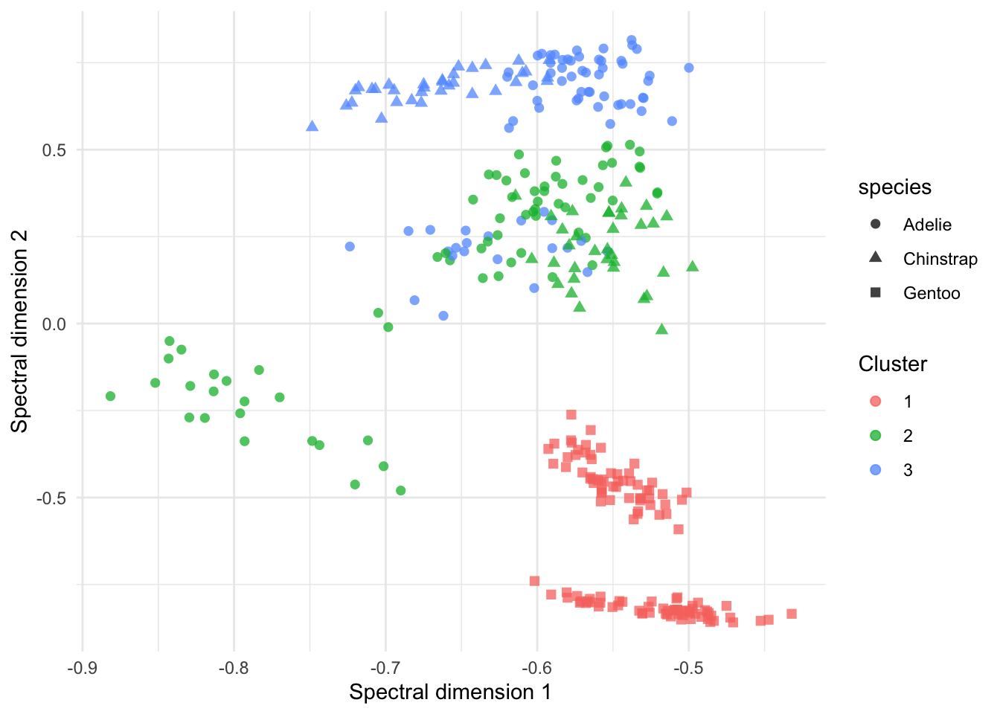

Distance-based clustering workflows
1 Overview
Distance-based clustering separates two decisions:
- how observations are compared;
- how the resulting dissimilarities are partitioned.
This separation is particularly useful for mixed-type data. manydist constructs the dissimilarity, while clustering methods such as partitioning around medoids (PAM) and spectral clustering operate on that common representation.
This guide covers both direct use of an MDist object and the integrated recipe interface:
-
step_mdist(output = "pairwise")constructs within-training dissimilarities; -
pam_dist()fits a PAM clustering; -
spectral_dist()fits a spectral clustering and exposes its embedding.
2 Setup
We use mixed numerical and categorical predictors from palmerpenguins. Species is retained only for post-hoc interpretation; it is not used to form the clusters.
penguins_small <- palmerpenguins::penguins |>
dplyr::select(
species,
bill_length_mm,
bill_depth_mm,
flipper_length_mm,
body_mass_g,
island,
sex
) |>
tidyr::drop_na()
penguin_x <- penguins_small |>
dplyr::select(-species)
dplyr::glimpse(penguin_x)Rows: 333
Columns: 6
$ bill_length_mm <dbl> 39.1, 39.5, 40.3, 36.7, 39.3, 38.9, 39.2, 41.1, 38.6…
$ bill_depth_mm <dbl> 18.7, 17.4, 18.0, 19.3, 20.6, 17.8, 19.6, 17.6, 21.2…
$ flipper_length_mm <int> 181, 186, 195, 193, 190, 181, 195, 182, 191, 198, 18…
$ body_mass_g <int> 3750, 3800, 3250, 3450, 3650, 3625, 4675, 3200, 3800…
$ island <fct> Torgersen, Torgersen, Torgersen, Torgersen, Torgerse…
$ sex <fct> male, female, female, female, male, female, male, fe…
3 Starting from an MDist object
The direct workflow is useful when a clustering function already accepts a dist object. Here, mdist() constructs a Gower dissimilarity and cluster::pam() performs the partitioning.
d_gower <- mdist(
penguin_x,
preset = "gower"
)
d_gowerMDist object
preset : gower
number of observations : 333
number of continuous variables : 4
number of categorical variables : 2
parameters:
- commensurability adjustment: FALSE
pam_direct <- cluster::pam(
x = d_gower$to_dist(),
k = 3,
diss = TRUE
)
pam_directMedoids:
ID
[1,] "37" "37"
[2,] "129" "129"
[3,] "172" "172"
Clustering vector:
1 2 3 4 5 6 7 8 9 10 11 12 13 14 15 16 17 18 19 20
1 2 2 2 1 2 1 2 1 1 2 2 1 2 1 2 1 2 1 3
21 22 23 24 25 26 27 28 29 30 31 32 33 34 35 36 37 38 39 40
2 1 2 2 1 2 1 2 1 2 1 1 2 2 1 2 1 2 1 2
41 42 43 44 45 46 47 48 49 50 51 52 53 54 55 56 57 58 59 60
1 1 2 1 2 1 2 3 2 1 2 1 2 1 2 3 2 1 2 1
61 62 63 64 65 66 67 68 69 70 71 72 73 74 75 76 77 78 79 80
2 1 2 1 2 1 2 1 2 1 2 1 2 1 2 1 2 1 2 1
81 82 83 84 85 86 87 88 89 90 91 92 93 94 95 96 97 98 99 100
1 2 1 2 2 1 2 1 2 1 2 1 2 1 2 3 2 1 2 1
101 102 103 104 105 106 107 108 109 110 111 112 113 114 115 116 117 118 119 120
2 1 2 3 2 3 2 3 2 3 2 1 2 1 2 1 2 1 2 1
121 122 123 124 125 126 127 128 129 130 131 132 133 134 135 136 137 138 139 140
2 1 2 1 2 1 2 1 2 1 2 1 2 1 2 1 2 1 2 1
141 142 143 144 145 146 147 148 149 150 151 152 153 154 155 156 157 158 159 160
1 2 2 1 2 1 3 3 3 3 3 3 3 3 3 3 3 3 3 3
161 162 163 164 165 166 167 168 169 170 171 172 173 174 175 176 177 178 179 180
3 3 3 3 3 3 3 3 3 3 3 3 3 3 3 3 3 3 3 3
181 182 183 184 185 186 187 188 189 190 191 192 193 194 195 196 197 198 199 200
3 3 3 3 3 3 3 3 3 3 3 3 3 3 3 3 3 3 3 3
201 202 203 204 205 206 207 208 209 210 211 212 213 214 215 216 217 218 219 220
3 3 3 3 3 3 3 3 3 3 3 3 3 3 3 3 3 3 3 3
221 222 223 224 225 226 227 228 229 230 231 232 233 234 235 236 237 238 239 240
3 3 3 3 3 3 3 3 3 3 3 3 3 3 3 3 3 3 3 3
241 242 243 244 245 246 247 248 249 250 251 252 253 254 255 256 257 258 259 260
3 3 3 3 3 3 3 3 3 3 3 3 3 3 3 3 3 3 3 3
261 262 263 264 265 266 267 268 269 270 271 272 273 274 275 276 277 278 279 280
3 3 3 3 3 2 1 1 2 1 2 2 1 2 1 2 1 2 1 2
281 282 283 284 285 286 287 288 289 290 291 292 293 294 295 296 297 298 299 300
1 1 2 2 1 2 1 2 1 2 1 2 1 2 1 2 1 2 1 1
301 302 303 304 305 306 307 308 309 310 311 312 313 314 315 316 317 318 319 320
2 2 1 2 1 1 2 1 2 2 1 2 1 1 2 2 1 2 1 2
321 322 323 324 325 326 327 328 329 330 331 332 333
1 2 1 1 2 1 2 2 1 2 1 1 2
Objective function:
build swap
0.1740031 0.1418300
Available components:
[1] "medoids" "id.med" "clustering" "objective" "isolation"
[6] "clusinfo" "silinfo" "diss" "call" Cluster numbers have no intrinsic ordering. A contingency table is therefore more informative than comparing the numeric cluster labels directly.
tibble::tibble(
cluster = factor(pam_direct$clustering),
species = penguins_small$species
) |>
dplyr::count(cluster, species)# A tibble: 6 × 3
cluster species n
<fct> <fct> <int>
1 1 Adelie 65
2 1 Chinstrap 34
3 2 Adelie 73
4 2 Chinstrap 34
5 3 Adelie 8
6 3 Gentoo 119The species labels are used here only to interpret an example whose classes are known. In an ordinary unsupervised analysis, cluster validation should instead rely on stability, separation, and subject-matter interpretation.
4 A recipe for pairwise dissimilarities
The integrated workflow begins with a recipe. For clustering, output = "pairwise" tells step_mdist() to replace the original predictors with the square within-training dissimilarity matrix.
gower_pairwise_recipe <- recipes::recipe(
~ .,
data = penguin_x
) |>
step_mdist(
recipes::all_predictors(),
preset = "gower",
output = "pairwise"
)
gower_pairwise_recipeStep: mdist
role: predictor
trained: FALSE
output: pairwise
preset: gower
(arguments handled internally by preset)output = "pairwise" is intended for training a clustering model. Baking genuinely new observations in this mode is not supported directly, because new-to-training dissimilarities are rectangular. The fitted clustering models handle that prediction step internally.
5 PAM with pam_dist()
pam_dist() defines the clustering specification. The model is fitted with the recipe and the original predictor data.
pam_spec <- pam_dist(num_clusters = 3)
pam_fit <- generics::fit(
pam_spec,
recipe = gower_pairwise_recipe,
data = penguin_x
)
pam_fitpam_dist fit
num_clusters : 3
n_obs : 333
medoid idx : 37, 129, 172 Calling predict() without new_data returns the training assignments.
pam_assignments <- predict(pam_fit) |>
dplyr::bind_cols(
penguins_small |>
dplyr::select(species)
)
pam_assignments |>
dplyr::count(.pred_cluster, species)# A tibble: 6 × 3
.pred_cluster species n
<fct> <fct> <int>
1 1 Adelie 65
2 1 Chinstrap 34
3 2 Adelie 73
4 2 Chinstrap 34
5 3 Adelie 8
6 3 Gentoo 119Distances to the fitted medoids are also available.
predict(pam_fit, type = "dist") |>
dplyr::slice_head(n = 6)# A tibble: 6 × 3
medoid_1 medoid_2 medoid_3
<dbl> <dbl> <dbl>
1 0.229 0.393 0.439
2 0.391 0.199 0.561
3 0.374 0.219 0.568
4 0.403 0.227 0.612
5 0.245 0.419 0.455
6 0.409 0.202 0.5955.1 Assigning new observations
For a genuine train/test illustration, we fit PAM on one subset and assign each held-out observation to its nearest fitted medoid.
set.seed(2026)
cluster_split <- rsample::initial_split(
penguins_small,
prop = 0.8,
strata = species
)
cluster_train <- rsample::training(cluster_split)
cluster_test <- rsample::testing(cluster_split)
cluster_train_x <- cluster_train |>
dplyr::select(-species)
cluster_test_x <- cluster_test |>
dplyr::select(-species)
train_pairwise_recipe <- recipes::recipe(
~ .,
data = cluster_train_x
) |>
step_mdist(
recipes::all_predictors(),
preset = "gower",
output = "pairwise"
)
pam_train_fit <- generics::fit(
pam_dist(num_clusters = 3),
recipe = train_pairwise_recipe,
data = cluster_train_x
)
pam_test_assignments <- predict(
pam_train_fit,
new_data = cluster_test_x
)
pam_test_assignments |>
dplyr::bind_cols(cluster_test |> dplyr::select(species)) |>
dplyr::count(.pred_cluster, species)# A tibble: 5 × 3
.pred_cluster species n
<fct> <fct> <int>
1 1 Adelie 17
2 1 Chinstrap 6
3 2 Adelie 13
4 2 Chinstrap 8
5 3 Gentoo 24The fitted step_mdist() preprocessor is reused, so held-out observations are compared with the training observations on the training scale.
6 Spectral clustering with spectral_dist()
Spectral clustering converts dissimilarities into a Gaussian affinity, constructs a spectral embedding, and partitions that embedding with k-means. The same pairwise recipe can be reused.
set.seed(2026)
spectral_spec <- spectral_dist(
num_clusters = 3,
sigma = NULL,
nstart = 50
)
spectral_fit <- generics::fit(
spectral_spec,
recipe = gower_pairwise_recipe,
data = penguin_x
)
spectral_fitspectral_dist fit
num_clusters : 3
n_obs : 333
sigma : 0.3651142
nstart : 50 With sigma = NULL, the bandwidth is chosen from the median pairwise dissimilarity. Training assignments are returned by the default prediction type.
spectral_assignments <- predict(spectral_fit) |>
dplyr::bind_cols(
penguins_small |>
dplyr::select(species)
)
spectral_assignments |>
dplyr::count(.pred_cluster, species)# A tibble: 5 × 3
.pred_cluster species n
<fct> <fct> <int>
1 1 Gentoo 119
2 2 Adelie 73
3 2 Chinstrap 34
4 3 Adelie 73
5 3 Chinstrap 34The spectral coordinates can be extracted with type = "embed".
spectral_embedding <- predict(
spectral_fit,
type = "embed"
) |>
dplyr::bind_cols(
spectral_assignments |>
dplyr::select(.pred_cluster, species)
)
spectral_embedding |>
dplyr::slice_head(n = 6)# A tibble: 6 × 5
dim_1 dim_2 dim_3 .pred_cluster species
<dbl> <dbl> <dbl> <fct> <fct>
1 -0.608 0.432 -0.666 2 Adelie
2 -0.599 0.620 0.507 3 Adelie
3 -0.600 0.641 0.479 3 Adelie
4 -0.577 0.710 0.403 3 Adelie
5 -0.570 0.413 -0.710 2 Adelie
6 -0.566 0.666 0.486 3 Adelie
spectral_embedding |>
ggplot2::ggplot(
ggplot2::aes(
x = dim_1,
y = dim_2,
colour = .pred_cluster,
shape = species
)
) +
ggplot2::geom_point(alpha = 0.75, size = 2) +
ggplot2::labs(
x = "Spectral dimension 1",
y = "Spectral dimension 2",
colour = "Cluster"
) +
ggplot2::theme_minimal()
7 Comparing distance choices
Changing the dissimilarity can change the clustering even when the partitioning method and number of clusters remain fixed. A compact comparison can reuse the same workflow with several presets.
fit_pam_preset <- function(preset) {
rec <- recipes::recipe(~ ., data = penguin_x) |>
step_mdist(
recipes::all_predictors(),
preset = preset,
output = "pairwise"
)
generics::fit(
pam_dist(num_clusters = 3),
recipe = rec,
data = penguin_x
)
}
pam_comparison <- tibble::tibble(
preset = c("gower", "hl", "euclidean")
) |>
dplyr::mutate(
fit = purrr::map(preset, fit_pam_preset),
assignments = purrr::map(fit, predict),
adjusted_rand = purrr::map_dbl(
assignments,
~ aricode::ARI(
as.integer(penguins_small$species),
as.integer(.x$.pred_cluster)
)
)
)
pam_comparison |>
dplyr::select(preset, adjusted_rand)# A tibble: 3 × 2
preset adjusted_rand
<chr> <dbl>
1 gower 0.496
2 hl 0.545
3 euclidean 0.530The adjusted Rand index is possible here because a known external label is available. It should not be interpreted as an internal clustering criterion, and it should not be optimised against labels that are meant to remain hidden. For a broader, auditable set of distance specifications, see the benchmarking guide.
8 Practical guidance
- Use
output = "pairwise"for training-only clustering representations. - Keep outcomes or reference labels outside the clustering recipe unless a deliberately response-aware analysis is intended. If a recipe formula does contain an outcome, response-aware specifications use it by default; set
response_used = FALSEto retain an outcome-independent clustering distance. - Treat cluster labels as nominal identifiers: cluster 1 is not inherently smaller or better than cluster 2.
- Set the random seed when fitting spectral clustering.
- Compare plausible distance definitions as part of the clustering sensitivity analysis, not as an afterthought.
- For new observations, call
predict()on the fittedpam_distorspectral_distobject so that the training preprocessor is reused.